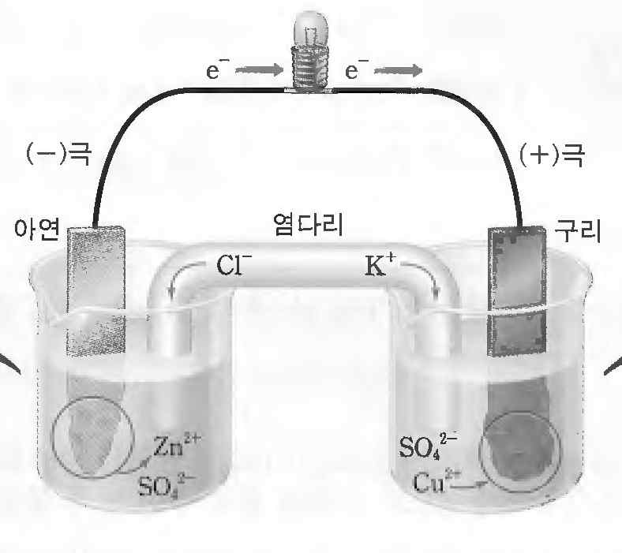

해설 3
단계 1 예시답안
(1) 기체의 종류에 관계없이 같은 온도와 압력 하에서는 같은 부피 속에 같은 수의 기체 분자가 들어 있다.
(2) 표준 상태(0 \(^\circ\)C, 1기압)에서 기체 분자 1몰이 차지하는 부피는 22.4 L이다. 따라서 산소 기체 11.2 L는 16 g(0.5몰)이다.
단계 2 예시답안
(a) 다니엘 전지 구성도: (-)극 아연 전극, (+)극 구리 전극, 염다리로 연결. 아연 쪽에 \(\text{Zn}^{2+}\), \(\text{SO}_4^{2-}\) 이온, 구리 쪽에 \(\text{SO}_4^{2-}\), \(\text{Cu}^{2+}\) 이온.

(b) 아연전극 \(\to\) 구리전극
(c) \(\Delta G^\circ = -nFE\), \(E = 1.10\)V
\(\Delta G^\circ < 0\) \(\to\) 자발반응
단계 3 예시답안
(a)
\(2\text{Cl}^-(aq) \to \text{Cl}_2(g) + 2e^-\)
\(\text{Cu}^{2+}(aq) + 2e^- \to \text{Cu}(s)\)
(b) 염소 기체 (\(\text{Cl}_2\)) 0.01몰을 생성하기 위해서는 전자 0.02몰이 필요하므로 필요한 전하량은 (0.02 몰) \(\times\) (96,500 C/몰) = 1,930 C 이 된다.